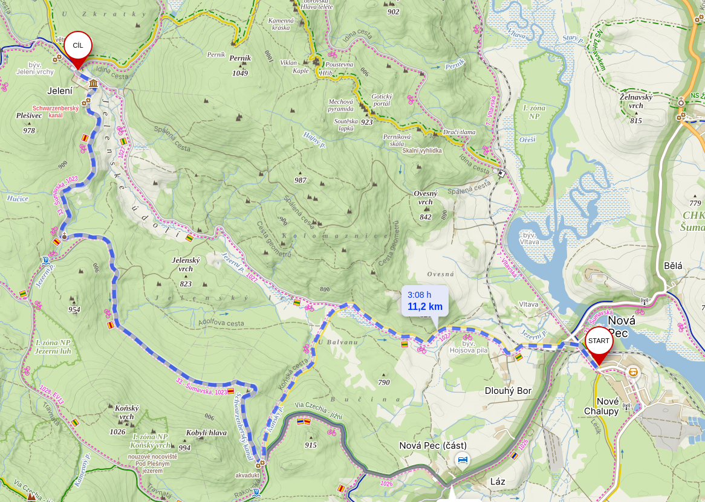
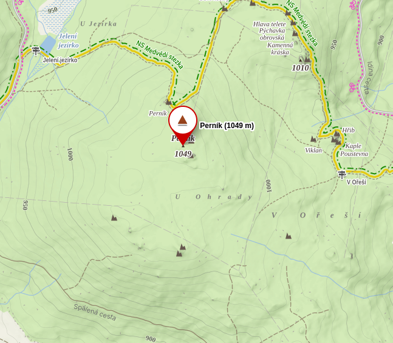
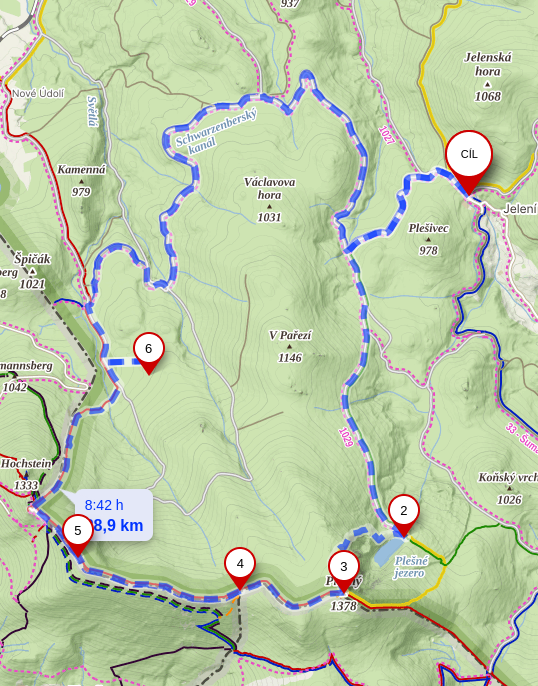
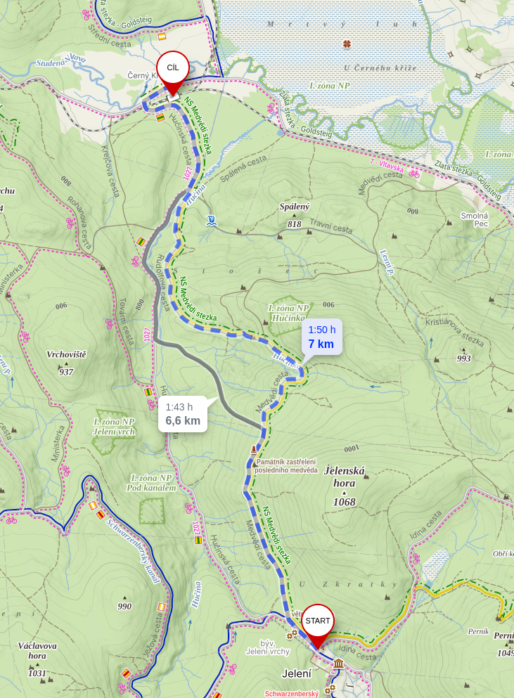
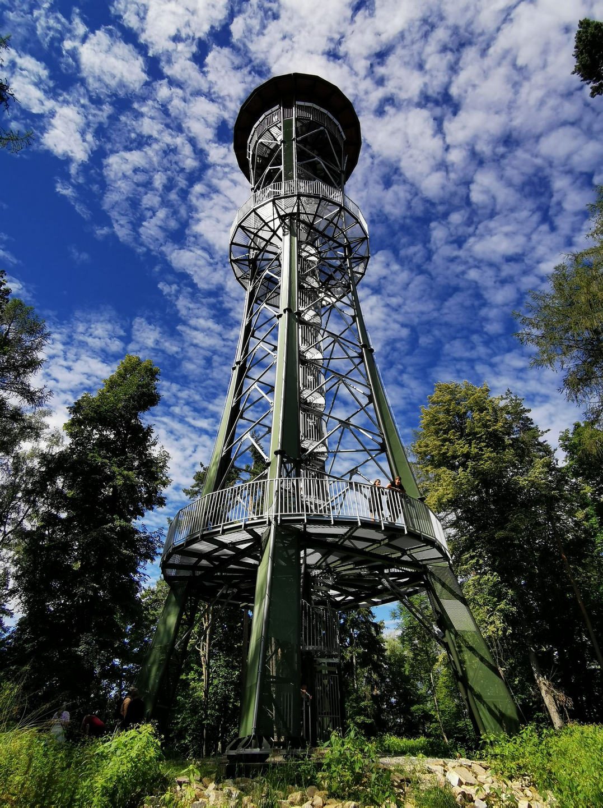
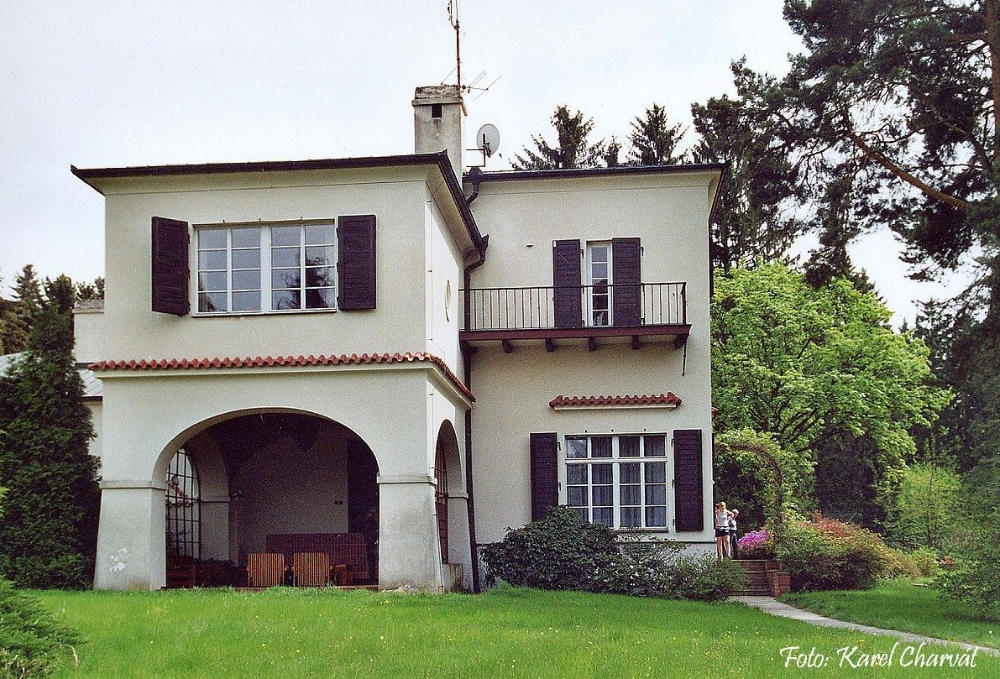
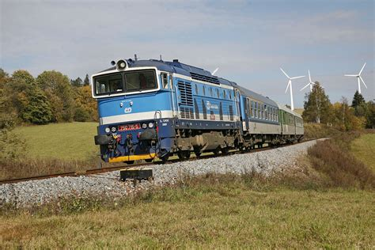

Den 1:
8:00-8:31 - Vstávání a doprava na Hlavní Nádraží Olomouc
8:31-15:44 - Cesta vlakem na zastávku Horní Planá (R 892, R 715, R 660, Os 8109) - 2x650 Kč
Ve vlaku Chleba s Řízkem na snídani - 2x100 Kč
15:50-15:10 - Nákup v obchodě Jednota

15:10-18:15 - Cesta na Penzion Jelení vrchny
Po cestě rohlík se sýrem z Jednoty - 2x42 Kč
18:15-18:30 - Ubytování se v Penzionu Jelení vrchy (3 noci)- 2 400 Kč
18:30-20:45 - Výstup na vrch Perník
20:45-21:00 - Rohlík se sýrem z Jednoty - 2x42 Kč
21:00-22:00 - Hraní deskových her
22:00-22:30 - Příprava na spánek
22:30-9:00 - Spánek


Den 2:
9:00-9:30 - Vstávání
9:30-10:00 - Snídaně (toastový chleba s marmeládou z Jednoty) - 2x12 Kč
10:00-21:00 - Výlet penzion -> Plešné jezero -> Plechý -> Trojmezí -> Dreisesselhaus (jídlo - Berggasthof Dreisessel - Zigeunerschnitzel mit Pommes - 2x437 Kč) -> penzion
21:00-21:00 - Rohlík se loveckým salámem z Jednoty - 2x44Kč
21:00-22:00 - Deskové hry
22:00-22:30 - Příprava na spánek
22:30-10:00 - Spánek

Den 3:
10:00-10:30 - Vstávání
10:30-11:00 - Snídaně (toastový chleba s medem z Jednoty - 2x20Kč)
11:00-13:00 - Medvědí stezka na zastávku Černý Kříž
13:00-13:29 - Chleba s řízkem z Jednoty na svačinu 2x100 Kč
13:29-13:55 - Vlakem na Horní Planá (Os 8108) - 2x58 Kč
13:55-14:30 - Cesta na rozhlednu Dobrá Voda

14:30-14:45 - Obdivování výhledu
14:45-15:00 - Cesta do Restaurace u Kohoutů
15:00-15:45 - Pozdní oběd v Restauraci u Kohoutů (slepičí vývar - 2x95 Kč, smažené řízky - 2x285 Kč, rajec jemně perlivý 0,75l - 2x72 Kč)
15:45 - 17:30 - Koupání v Lipnu
17:30 - 17:45 - Nákup v Coopu
17:56 - 18:08 - Vlakem z Horní Planí do Ovesná (Os 8109) - 2x38 Kč
18:08 - 20:30 - Medvědí stezkou do penzionu
20:30 - 21:00 - Rohlík se sýrem z Coopu - 2x42 Kč
21:00 - 21:30 - Příprava na spánek
21:30 - 6:00 - Spánek
Den 4:
6:00-6:15 - Vstávání
6:00-6:30 - Snídaně (toastový chleba s marmeládou z Coopu) - 2x12 Kč
6:30-7:00 - Balení a checkout

7:00-9:00 - Cesta do Nové Pece
9:00-9:15 - Nákup v Jednotě
9:40-12:35 - Vlak do stanice Tábor (Os 8104) - 2x265 Kč
12:35-12:45 - Cesta do restaurace Černá perla
12:45-13:45 - Jídlo v restauraci Černá perla (silný vývar - 2x69 Kč, caesar salát - 2x162 Kč, rajec jemně perlivý 0,75l - 2x72 Kč)
13:45-14:00 - Cesta do na stanici Tábor
14:25-14:30 - Vlak do Sezimova Ústí (Os 8314) - 2x23 Kč
14:30-15:00 - Cesta k Benešově vile
15:00-16:00 - Prohlídka Benešovy vily - 2x90 Kč
16:00-16:30 - Cesta na stanici Sezimovo Ǔstí
16:30-17:53 - Vlak do Bechyně (Os 8233, R 708, Os 28426) - 2x86 Kč
17:53-20:30 - Cesta z Bechyně do Resortu Koloděje
20:30-20:45 - Ubytování v Resortu Koloděje - 2 500 Kč
20:45-21:00 - Rohlík se salámem z Jednoty - 2x44Kč
21:00-21:30 - Příprava na spánek
21:30-6:30 - Spánek
Den 5:

6:30-6:45 - Vstávání
6:45-7:00 - Snídaně (toastový chleba s marmeládou z Jednoty) - 2x12 Kč
7:00-7:15 - Balení a checkout
7:15-9:45 - Cesta do Bechyně
10:00-21:21 - Cesta vlakem do Olomouce (Os 28413, Os 18408, Os 14819, Os 24819, Os 4525, Os 4221, Os 3847) - 2x415 Kč
Ve vlaku na oběd cheba s řízkem - 2x100 Kč
Ve vlaku na večeři poslední rohlík se sýrem z Jednoty - 2x42 Kč